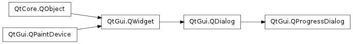

QProgressDialog ¶

Synopsis ¶
Functions ¶
- def autoClose ()
- def autoReset ()
- def labelText ()
- def maximum ()
- def minimum ()
- def minimumDuration ()
- def open (receiver, member)
- def setAutoClose (close)
- def setAutoReset (reset)
- def setBar (bar)
- def setCancelButton (button)
- def setLabel (label)
- def value ()
- def wasCanceled ()
Slots ¶
- def cancel ()
- def forceShow ()
- def reset ()
- def setCancelButtonText (text)
- def setLabelText (text)
- def setMaximum (maximum)
- def setMinimum (minimum)
- def setMinimumDuration (ms)
- def setRange (minimum, maximum)
- def setValue (progress)
Detailed Description ¶
The PySide.QtGui.QProgressDialog class provides feedback on the progress of a slow operation.
A progress dialog is used to give the user an indication of how long an operation is going to take, and to demonstrate that the application has not frozen. It can also give the user an opportunity to abort the operation.
A common problem with progress dialogs is that it is difficult to know when to use them; operations take different amounts of time on different hardware. PySide.QtGui.QProgressDialog offers a solution to this problem: it estimates the time the operation will take (based on time for steps), and only shows itself if that estimate is beyond PySide.QtGui.QProgressDialog.minimumDuration() (4 seconds by default).
Use PySide.QtGui.QProgressDialog.setMinimum() and PySide.QtGui.QProgressDialog.setMaximum() or the constructor to set the number of “steps” in the operation and call PySide.QtGui.QProgressDialog.setValue() as the operation progresses. The number of steps can be chosen arbitrarily. It can be the number of files copied, the number of bytes received, the number of iterations through the main loop of your algorithm, or some other suitable unit. Progress starts at the value set by PySide.QtGui.QProgressDialog.setMinimum() , and the progress dialog shows that the operation has finished when you call PySide.QtGui.QProgressDialog.setValue() with the value set by PySide.QtGui.QProgressDialog.setMaximum() as its argument.
The dialog automatically resets and hides itself at the end of the operation. Use PySide.QtGui.QProgressDialog.setAutoReset() and PySide.QtGui.QProgressDialog.setAutoClose() to change this behavior. Note that if you set a new maximum (using PySide.QtGui.QProgressDialog.setMaximum() or PySide.QtGui.QProgressDialog.setRange() ) that equals your current PySide.QtGui.QProgressDialog.value() , the dialog will not close regardless.
There are two ways of using PySide.QtGui.QProgressDialog : modal and modeless.
Compared to a modeless PySide.QtGui.QProgressDialog , a modal PySide.QtGui.QProgressDialog is simpler to use for the programmer. Do the operation in a loop, call PySide.QtGui.QProgressDialog.setValue() at intervals, and check for cancellation with PySide.QtGui.QProgressDialog.wasCanceled() . For example:
progress = QProgressDialog ( "Copying files..." , "Abort Copy" , 0 , numFiles , self ) progress . setWindowModality ( Qt . WindowModal ) for i in rang ( numFiles ): progress . setValue ( i ) if progress . wasCanceled (): break #... copy one file progress . setValue ( numFiles )A modeless progress dialog is suitable for operations that take place in the background, where the user is able to interact with the application. Such operations are typically based on PySide.QtCore.QTimer (or QObject.timerEvent() ), PySide.QtCore.QSocketNotifier , or QUrlOperator ; or performed in a separate thread. A PySide.QtGui.QProgressBar in the status bar of your main window is often an alternative to a modeless progress dialog.
You need to have an event loop to be running, connect the PySide.QtGui.QProgressDialog.canceled() signal to a slot that stops the operation, and call PySide.QtGui.QProgressDialog.setValue() at intervals. For example:
# Operation constructor def __init__(self, parent): QObject.__init__(self, parent) pd = QProgressDialog("Operation in progress.", "Cancel", 0, 100) connect(pd, SIGNAL("canceled()"), self, SLOT("cancel()")) t = QTimer(self) connect(t, SIGNAL("timeout()"), self, SLOT("perform()")) t.start(0) def perform(self): pd.setValue(steps) #... perform one percent of the operation steps++ if steps > pd.maximum(): t.stop() def cancel(self): t.stop() #... cleanupIn both modes the progress dialog may be customized by replacing the child widgets with custom widgets by using PySide.QtGui.QProgressDialog.setLabel() , PySide.QtGui.QProgressDialog.setBar() , and PySide.QtGui.QProgressDialog.setCancelButton() . The functions PySide.QtGui.QProgressDialog.setLabelText() and PySide.QtGui.QProgressDialog.setCancelButtonText() set the texts shown.

See also
PySide.QtGui.QDialog PySide.QtGui.QProgressBar GUI Design Handbook: Progress Indicator Find Files Example Pixelator Example
- class PySide.QtGui. QProgressDialog ( [ parent=None [ , flags=0 ] ] ) ¶
- class PySide.QtGui. QProgressDialog ( labelText , cancelButtonText , minimum , maximum [ , parent=None [ , flags=0 ] ] )
-
Parameters: - cancelButtonText – unicode
- flags – PySide.QtCore.Qt.WindowFlags
- labelText – unicode
- minimum – PySide.QtCore.int
- maximum – PySide.QtCore.int
- parent – PySide.QtGui.QWidget
- PySide.QtGui.QProgressDialog. autoClose ( ) ¶
-
Return type: PySide.QtCore.bool This property holds whether the dialog gets hidden by PySide.QtGui.QProgressDialog.reset() .
The default is true.
- PySide.QtGui.QProgressDialog. autoReset ( ) ¶
-
Return type: PySide.QtCore.bool This property holds whether the progress dialog calls PySide.QtGui.QProgressDialog.reset() as soon as PySide.QtGui.QProgressDialog.value() equals PySide.QtGui.QProgressDialog.maximum() .
The default is true.
- PySide.QtGui.QProgressDialog. cancel ( ) ¶
-
Resets the progress dialog. PySide.QtGui.QProgressDialog.wasCanceled() becomes true until the progress dialog is reset. The progress dialog becomes hidden.
- PySide.QtGui.QProgressDialog. canceled ( ) ¶
- PySide.QtGui.QProgressDialog. forceShow ( ) ¶
-
Shows the dialog if it is still hidden after the algorithm has been started and PySide.QtGui.QProgressDialog.minimumDuration() milliseconds have passed.
- PySide.QtGui.QProgressDialog. labelText ( ) ¶
-
Return type: unicode This property holds the label’s text.
The default text is an empty string.
- PySide.QtGui.QProgressDialog. maximum ( ) ¶
-
Return type: PySide.QtCore.int This property holds the highest value represented by the progress bar.
The default is 0.
- PySide.QtGui.QProgressDialog. minimum ( ) ¶
-
Return type: PySide.QtCore.int This property holds the lowest value represented by the progress bar.
The default is 0.
- PySide.QtGui.QProgressDialog. minimumDuration ( ) ¶
-
Return type: PySide.QtCore.int This property holds the time that must pass before the dialog appears.
If the expected duration of the task is less than the PySide.QtGui.QProgressDialog.minimumDuration() , the dialog will not appear at all. This prevents the dialog popping up for tasks that are quickly over. For tasks that are expected to exceed the PySide.QtGui.QProgressDialog.minimumDuration() , the dialog will pop up after the PySide.QtGui.QProgressDialog.minimumDuration() time or as soon as any progress is set.
If set to 0, the dialog is always shown as soon as any progress is set. The default is 4000 milliseconds.
- PySide.QtGui.QProgressDialog. open ( receiver , member ) ¶
-
Parameters: - receiver – PySide.QtCore.QObject
- member – str
This is an overloaded function.
Opens the dialog and connects its PySide.QtGui.QDialog.accepted() signal to the slot specified by receiver and member .
The signal will be disconnected from the slot when the dialog is closed.
- PySide.QtGui.QProgressDialog. reset ( ) ¶
-
Resets the progress dialog. The progress dialog becomes hidden if PySide.QtGui.QProgressDialog.autoClose() is true.
- PySide.QtGui.QProgressDialog. setAutoClose ( close ) ¶
-
Parameters: close – PySide.QtCore.bool This property holds whether the dialog gets hidden by PySide.QtGui.QProgressDialog.reset() .
The default is true.
- PySide.QtGui.QProgressDialog. setAutoReset ( reset ) ¶
-
Parameters: reset – PySide.QtCore.bool This property holds whether the progress dialog calls PySide.QtGui.QProgressDialog.reset() as soon as PySide.QtGui.QProgressDialog.value() equals PySide.QtGui.QProgressDialog.maximum() .
The default is true.
- PySide.QtGui.QProgressDialog. setBar ( bar ) ¶
-
Parameters: bar – PySide.QtGui.QProgressBar Sets the progress bar widget to bar . The progress dialog resizes to fit. The progress dialog takes ownership of the progress bar which will be deleted when necessary, so do not use a progress bar allocated on the stack.
- PySide.QtGui.QProgressDialog. setCancelButton ( button ) ¶
-
Parameters: button – PySide.QtGui.QPushButton Sets the cancel button to the push button, cancelButton . The progress dialog takes ownership of this button which will be deleted when necessary, so do not pass the address of an object that is on the stack, i.e. use new() to create the button. If 0 is passed then no cancel button will be shown.
- PySide.QtGui.QProgressDialog. setCancelButtonText ( text ) ¶
-
Parameters: text – unicode Sets the cancel button’s text to cancelButtonText . If the text is set to QString() then it will cause the cancel button to be hidden and deleted.
- PySide.QtGui.QProgressDialog. setLabel ( label ) ¶
-
Parameters: label – PySide.QtGui.QLabel Sets the label to label . The progress dialog resizes to fit. The label becomes owned by the progress dialog and will be deleted when necessary, so do not pass the address of an object on the stack.
- PySide.QtGui.QProgressDialog. setLabelText ( text ) ¶
-
Parameters: text – unicode This property holds the label’s text.
The default text is an empty string.
- PySide.QtGui.QProgressDialog. setMaximum ( maximum ) ¶
-
Parameters: maximum – PySide.QtCore.int This property holds the highest value represented by the progress bar.
The default is 0.
- PySide.QtGui.QProgressDialog. setMinimum ( minimum ) ¶
-
Parameters: minimum – PySide.QtCore.int This property holds the lowest value represented by the progress bar.
The default is 0.
- PySide.QtGui.QProgressDialog. setMinimumDuration ( ms ) ¶
-
Parameters: ms – PySide.QtCore.int This property holds the time that must pass before the dialog appears.
If the expected duration of the task is less than the PySide.QtGui.QProgressDialog.minimumDuration() , the dialog will not appear at all. This prevents the dialog popping up for tasks that are quickly over. For tasks that are expected to exceed the PySide.QtGui.QProgressDialog.minimumDuration() , the dialog will pop up after the PySide.QtGui.QProgressDialog.minimumDuration() time or as soon as any progress is set.
If set to 0, the dialog is always shown as soon as any progress is set. The default is 4000 milliseconds.
- PySide.QtGui.QProgressDialog. setRange ( minimum , maximum ) ¶
-
Parameters: - minimum – PySide.QtCore.int
- maximum – PySide.QtCore.int
Sets the progress dialog’s minimum and maximum values to minimum and maximum , respectively.
If maximum is smaller than minimum , minimum becomes the only legal value.
If the current value falls outside the new range, the progress dialog is reset with PySide.QtGui.QProgressDialog.reset() .
- PySide.QtGui.QProgressDialog. setValue ( progress ) ¶
-
Parameters: progress – PySide.QtCore.int This property holds the current amount of progress made..
For the progress dialog to work as expected, you should initially set this property to 0 and finally set it to QProgressDialog.maximum() ; you can call PySide.QtGui.QProgressDialog.setValue() any number of times in-between.
Warning
If the progress dialog is modal (see QProgressDialog.QProgressDialog() ), PySide.QtGui.QProgressDialog.setValue() calls QApplication.processEvents() , so take care that this does not cause undesirable re-entrancy in your code. For example, don’t use a PySide.QtGui.QProgressDialog inside a PySide.QtGui.QWidget.paintEvent() !
- PySide.QtGui.QProgressDialog. value ( ) ¶
-
Return type: PySide.QtCore.int This property holds the current amount of progress made..
For the progress dialog to work as expected, you should initially set this property to 0 and finally set it to QProgressDialog.maximum() ; you can call PySide.QtGui.QProgressDialog.setValue() any number of times in-between.
Warning
If the progress dialog is modal (see QProgressDialog.QProgressDialog() ), PySide.QtGui.QProgressDialog.setValue() calls QApplication.processEvents() , so take care that this does not cause undesirable re-entrancy in your code. For example, don’t use a PySide.QtGui.QProgressDialog inside a PySide.QtGui.QWidget.paintEvent() !
- PySide.QtGui.QProgressDialog. wasCanceled ( ) ¶
-
Return type: PySide.QtCore.bool This property holds whether the dialog was canceled.